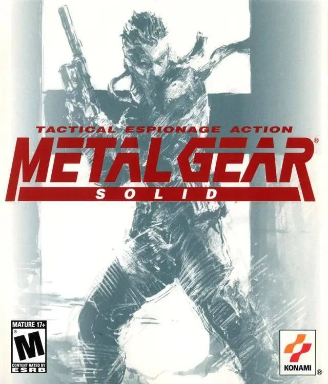

1: Metal Gear Solid PSN

Esta secuela de Metal Gear nos cuenta la historia de Big Boss, el soldado del que Solid Snake y Liquid Snake son clones, en una operación en Rusia para investigar
los planes del enemigo comunista, germen de los Metal Gear.
2: The Last of Us

The Last of Us es el nuevo proyecto de Naughty Dog, los creadores de la saga Uncharted y de Jak & Daxter, en exclusiva para PlayStation 3. Tras un desastre
biológico, la mayoría de la población del mundo ha perecido y las calles están desiertas y en ruinas.
3: Grand Theft Auto V

La quinta parte de Grand Theft Auto para PS3 vuelve a la costa oeste americana, ambientándose en la ciudad de Los Santos (Los Ángeles) y sus alrededores,
con una historia ambientada en la actualidad, especialmente en las consecuencias de la crisis económica.
4: Persona 5

Persona 5 es un videojuego exclusivo de SONY desarrollado y producido por Atlus, para las videoconsolas PS4 y PS3. A diferencia de otras entregas de la saga,
no está confirmado para PS Vita..
5: Uncharted 2: El Reino de los Ladrones

Nathan Drake se enfrenta a una nueva aventura, esta vez en el Himalaya, donde tendrá que buscar el reino perdido de Shambala combinando plataformas,
puzles y disparos, con viejos conocidos y nuevos amigos de los que nunca podrá fiarse del todo.